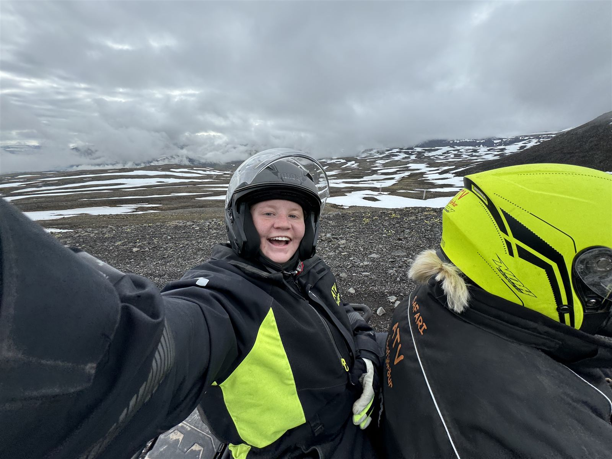
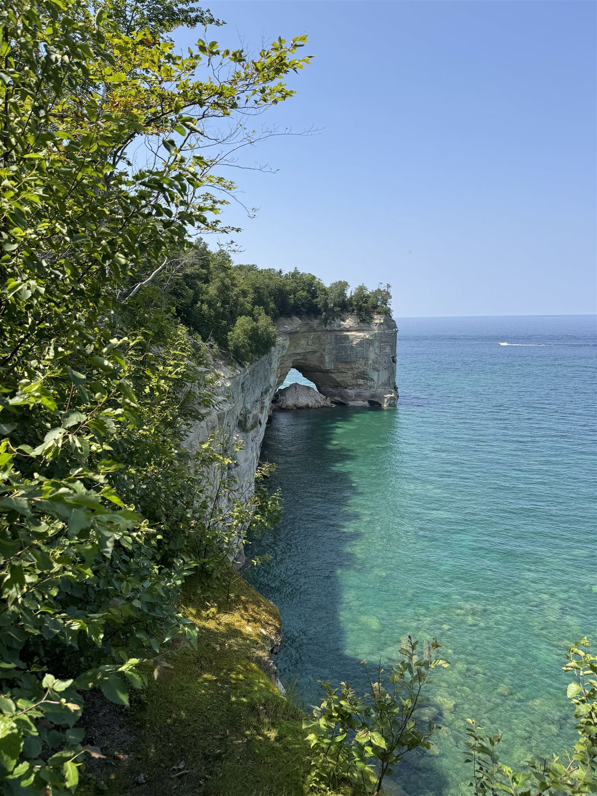

Curious, organized, and always outside when I can be.
I'm a college student in the Grand Rapids area, exploring career paths and figuring out what kind of work actually feels meaningful. I'm drawn to roles that mix planning, people, and clear communication: anything that lets me think critically while staying grounded in real‑world work.
- Wedding & event work. I love seeing all the moving parts sync up.
- Literary analysis. Close reading is basically my sport.
- Ethical reasoning. Especially in business and everyday decisions.
I'm gaining hands‑on experience in the wedding industry while sharpening my academic writing and analysis skills. I like being both behind the scenes and thoughtfully involved in the bigger picture.
- I love simple weekly meal routines.
- No fish or tuna.
- Cottage cheese is always a yes if it's large curd.
- I swim for fun, never for laps.

Why the outdoors resets me
My favorite places I've hiked and swum, the psychology behind why certain things bring us joy, and a quick quiz to find out what brings you joy.